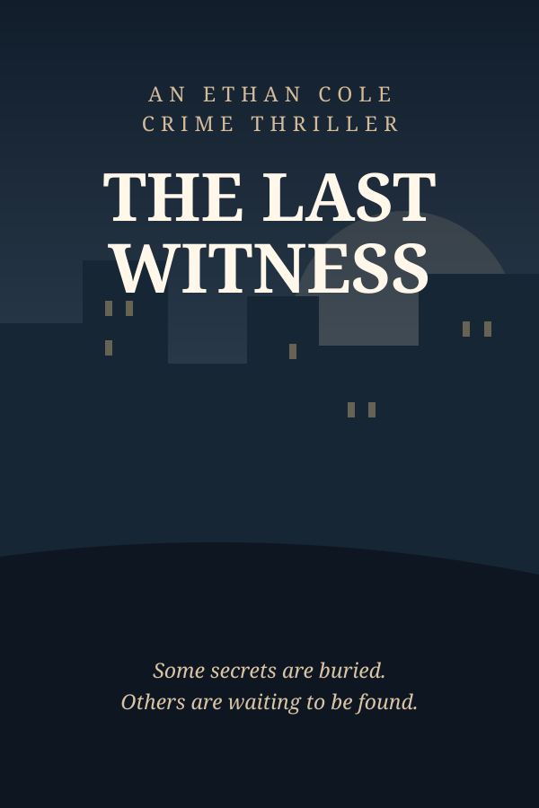

The Last Witness
A murder in Los Angeles reopens a disappearance from 2009.
In progress · 3 of 30 chapters
Open book →Select a book to open its interactive reader. More titles can be added anytime.

A murder in Los Angeles reopens a disappearance from 2009.